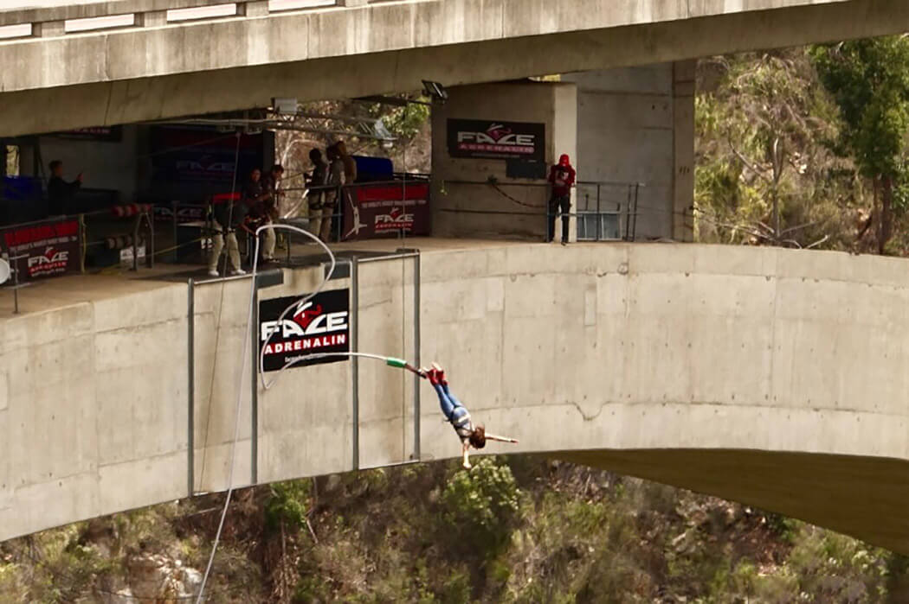

МОРСКОЙ НАЦИОНАЛЬНЫЙ ПАРК ТСИТСИКАММА
Тситсикамма (Tsitsikamma National Park) — первый морской национальный парк в Африке, расположенный в сердце живописной дороги Гарден-Рут.
Это 80 км скалистого побережья с тихими заливами, оврагами, лесами и песчаными пляжами.
В парке обитает множество животных, в то время как морская часть заповедника предоставляет великолепные возможности для дайвинга.
Сюда приезжают, главным образом, ради долгих прогулок по различным тропам и дорожкам парка, а также изумительным видам на океан.
Этот парк очень популярен среди туристов благодаря предоставлению им различных активити от прогулок по горным тропам и простого созерцания местных природных красот до прыжков с самого высокого в мире моста Блоукранс высотой 216 метров.
Длительность прыжка составляет порядка 5 секунд, в нижней точке полета показатель скорости достигает 120 км/ч.

Слово «Цицикамма» происходит от хеохского языка цсе-цеса , что означает «ясное», и гами, что означает «вода», вероятно, относящееся к чистой воде реки Цицикамма. Другими значениями являются «место много воды» и «вода начинается».
Особой популярностью пользуются пешие туры, которые позволят поближе познакомиться с природой заповедника и встретить множество животных, разгуливающих здесь в полной свободе.

Одним из пунктов экскурсий является посещение леса желтых деревьев – главной достопримечательности заповедника, где находятся удивительные деревья-гиганты, возраст которых превышает 700 лет.
находится так называемое Big Tree. Гигантическое хвойное дерево, возрастом якобы 800 лет, делает его старейшим и одновременно крупнейшим известным деревом в Южной Африке.
ВВЕРХ